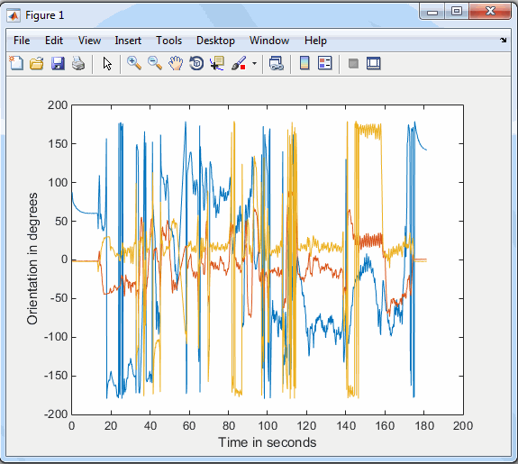

This example shows how to plot orientation data. You can use the logged sensor data either during or after acquisition for plotting and other analyses.
This example assumes that you have already installed and set up MATLAB® Mobile™ on your iOS device and connected it to your computer running MATLAB or to the MathWorks Cloud. For information about these steps, see Get Started with iOS Sensors.
Start MATLAB Mobile on your iOS device.
On the Sensors screen, tap the Orientation sensor.
Place the device where you want it for sending the sensor data.
On your computer, in MATLAB, connect to the device.
connector onAlternatively, if you are running MATLAB using MathWorks Cloud, log in to the Cloud.
In MATLAB, create a mobiledev object, m.
m = mobiledev
mobiledev with properties:
Connected: 1
Logging: 0
InitialTimestamp: ''
AccelerationSensorEnabled: 0
AngularVelocitySensorEnabled: 0
MagneticFieldSensorEnabled: 0
OrientationSensorEnabled: 1
PositionSensorEnabled: 0
Supported functionsIn the display that is shown when you create the object, a value
of 1 means enabled or on, and 0 means
not enabled or off. In this example, you can see that the device and
computer are connected, and data is not being logged yet. The Orientation
sensor is shown as enabled since you selected it on the device.
Begin logging data from the selected sensor by enabling
the Logging property.
m.Logging = 1
This action starts the transmitting of data from all selected sensors. You can also start transmission by tapping the Start button in MATLAB Mobile.
You can see a display of the object properties any
time, using the disp function. Now that you have
started logging data, the display shows more information.
disp(m)
mobiledev with properties:
Connected: 1
Logging: 1
InitialTimestamp: '06-08-2014 13:45:56.529'
AccelerationSensorEnabled: 0
AngularVelocitySensorEnabled: 0
MagneticFieldSensorEnabled: 0
OrientationSensorEnabled: 1
PositionSensorEnabled: 0
Current Sensor Values:
Acceleration: [0x3 double] (m/s^2)
AngularVelocity: [0x3 double] (rad/s)
MagneticField: [0x3 double] (microtesla)
Orientation: [1.8102 0.0101 -0.0418] (degrees)
Position Data:
Latitude: [0x1 double] (degrees)
Longitude: [0x1 double] (degrees)
Speed: [0x1 double] (m/s)
Course: [0x1 double] (degrees)
Altitude: [0x1 double] (m)
HorizontalAccuracy: [0x1 double] (m)
Supported functionsIn the display, you can see that the device and computer are
connected, and data is being logged. The InitialTimestamp value
shows the timestamp when the first packet of data was logged. The
sensor values are displayed, indicating the current measurement value.
After you have collected the amount of data you need, stop logging sensor data.
m.Logging = 0
You can see the entire log of all readings using the log functions. You can use these functions while you are still logging or after you stop. Each sensor type has a log function:
accellog — Logged acceleration data
angvellog — Logged angular velocity
data
magfieldlog — Logged magnetic field
data
orientlog — Logged orientation data
poslog — Logged position data, including
data points for latitude, longitude, speed, course, altitude, and
horizontal accuracy.
See Device Orientation for a diagram showing the X, Y,
and Z axes relative to the device.
To get the logged orientation data from object m,
assign the variable o for the logged orientation
data and t for the timestamps.
[o, t] = orientlog(m);
You can then plot the data.
plot(t, o)

In this example, the Orientation data is from the device being
moved a short distance for a few minutes. The plot shows the time
(t) against orientation (o).
You can keep the logs to access the data again, or discard them from your MATLAB session:
discardlogs(m)
When you are done with the session, delete the object.
clear mClose the connection between MATLAB and the iOS device.
connector off